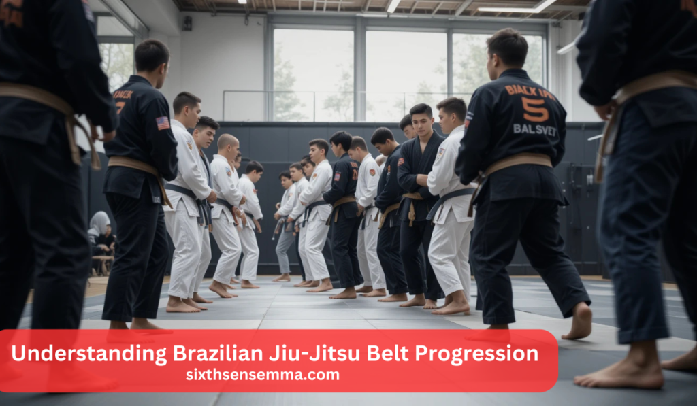
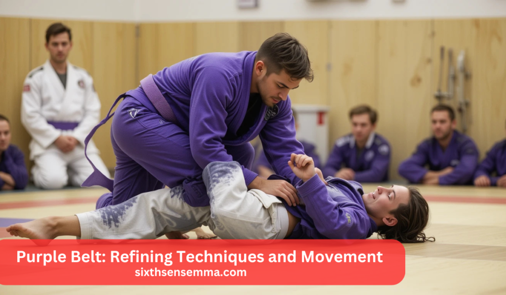

Mastering Brazilian Jiu Jitsu Belts: A Complete Guide

Brazilian Jiu Jitsu Belts represent a structured progression system that reflects a practitioner’s skill, experience, and dedication to the art. Unlike many martial arts with fixed promotion timelines, BJJ belt advancements are based on technical proficiency, time spent on the mats, and contributions to the community. Each belt signifies a different phase in a practitioner’s journey, from learning fundamental techniques at the white belt level to mastering advanced strategies as a black belt.
The progression through Brazilian Jiu Jitsu Belts is not only about learning techniques but also about personal growth, resilience, and strategic thinking. Practitioners must refine their skills, develop their unique game style, and mentor others as they advance. With each rank, students gain a deeper understanding of BJJ’s principles, ensuring a continuous learning process that extends far beyond just achieving a black belt.
How long does it take to progress through the Brazilian Jiu Jitsu Belts?
The timeline for BJJ belt progression varies based on training frequency, dedication, and skill level. On average, it takes 8-12 years to achieve a black belt, with each belt requiring consistent practice and demonstrated proficiency. Promotions are earned through hard work, technical ability, and contributions to the BJJ community rather than just time spent training.

Understanding Brazilian Jiu-Jitsu Belt Progression
Brazilian Jiu-Jitsu Belts follow a structured ranking system that reflects a practitioner’s growth, skill level, and overall experience. Unlike some martial arts where belt promotions are awarded in fixed intervals, BJJ promotions are based on technical proficiency, time on the mats, and personal development. Each belt comes with specific requirements, expectations, and estimated timeframes for advancement, ensuring that progression is earned through dedication and hard work.
BJJ Belt Ranks and Their Requirements
| Belt Rank | Requirements & Skills | Average Timeframe | Development Tips |
|---|---|---|---|
| White Belt | Learning fundamental positions, escapes, and basic submissions. Developing survival skills and understanding the core principles of BJJ. | 1-2 years | Focus on defense, build strong fundamentals, and drill techniques repeatedly. |
| Blue Belt | Improving guard passing, submissions, and transitions. Beginning to understand strategy and control in sparring. | 2-4 years | Train consistently, experiment with different techniques, and focus on positional awareness. |
| Purple Belt | Developing a personal game style, refining techniques, and demonstrating a deeper understanding of strategy. Teaching and mentoring lower belts. | 2-4 years | Start thinking about technique combinations, improve adaptability, and work on weaknesses. |
| Brown Belt | Mastering advanced techniques, submissions, and transitions. Demonstrating leadership and a high level of control. | 1-3 years | Focus on precision, refine small details, and prepare for black belt responsibilities. |
| Black Belt | Achieving a high level of technical expertise, fluidity, and mastery of all fundamental and advanced techniques. | 8-12+ years (total journey) | Continue evolving, train with higher-level practitioners, and contribute to the BJJ community through teaching and mentoring. |
Progression Expectations and Timeframes
BJJ progression varies based on dedication, training frequency, and individual ability. While the timeline for each belt may differ, most practitioners take 8-12 years to achieve a black belt. Promotions are not only based on skill but also on consistency, competition experience, and contributions to the academy or community.
White Belt: The Beginning of the Journey
The white belt represents the starting point in Brazilian Jiu Jitsu Belts symbolizing a blank slate, an open mind, and the willingness to embark on a long yet rewarding journey. This stage is often the most challenging, as beginners must adapt to a new way of movement, unlearn bad habits, and embrace the process of consistent learning.
Also Read Our Article: Mastering Brazilian Jiu Jitsu Belts: A Complete Guide
Understanding the White Belt Phase
At this level, practitioners are introduced to the fundamental principles of BJJ, including positional awareness, survival strategies, and the basics of offense and defense. Unlike traditional martial arts, where beginners might start with striking techniques, kids BJJ classes white belts must first learn how to survive, escape, and establish control before attempting complex maneuvers.
Key Areas of Focus for White Belts
| Aspect | Description | Why It’s Important |
|---|---|---|
| Fundamental Positions | Learning the guard, mount, side control, back control, and half-guard positions. | These are the building blocks of BJJ, helping beginners understand control and movement. |
| Defensive Skills | Developing escapes from bad positions, such as mount and side control, and learning frames and posture. | Before attacking, a white belt must first learn how to stay safe and regain control. |
| Basic Submissions | Introducing essential submissions like the rear-naked choke, armbar, and triangle choke. | These techniques help develop an understanding of leverage and control. |
| Managing Ego | Accepting losses in training, staying patient, and focusing on learning rather than winning. | A strong mindset prevents frustration and speeds up improvement. |
| Tapping Early & Often | Understanding when to submit and avoiding unnecessary injuries. | Learning safety habits ensures long-term progression in BJJ. |
Blue Belt: Building a Solid Foundation
Achieving the blue belt in Brazilian Jiu-Jitsu is a significant milestone that signifies a deeper understanding of fundamental techniques and their practical application. At this stage, practitioners move beyond basic survival skills and begin developing a more strategic approach to rolling and competition. The primary focus areas at this level include improving defensive techniques, mastering guard passing, and gaining valuable experience through sparring and competition.
Enhancing Defensive Techniques
One of the biggest challenges at the blue belt level is developing reliable escapes from various positions. Practitioners must work on escaping dominant positions such as mount, side control, and back control with efficiency and control. Learning how to recover guard effectively is also crucial, as it helps prevent an opponent from establishing control and allows the practitioner to regain an offensive position.
Mastering Guard Passing
Guard passing is one of the most essential skills a blue belt must develop in Brazilian Jiu-Jitsu (BJJ). It serves as the bridge between being stuck in an opponent’s guard and achieving dominant positions such as side control, mount, or back control. At this stage, practitioners need to refine their ability to break through and bypass different types of guards, including closed guard, open guard, and half guard.
Gaining Experience Through Competition
At the blue belt level, practitioners are strongly encouraged to test their skills in competitions. While competing is not mandatory, it provides a unique and invaluable experience that accelerates growth in Brazilian Jiu-Jitsu (BJJ). Competition serves as a real-world testing ground, allowing practitioners to assess their strengths and weaknesses in a setting where opponents are equally motivated and technically proficient. The pressures of live competition differ significantly from regular gym training, making it an essential part of a blue belt’s development.

Purple Belt: Refining Techniques and Movement
The purple belt represents a significant milestone in a Brazilian Jiu-Jitsu (BJJ) practitioner’s journey, marking the transition from a technical student to a knowledgeable and adaptable martial artist. At this stage, the focus extends beyond basic execution to refining techniques, increasing efficiency, and developing a deeper strategic understanding of the art. It is a period where practitioners begin to take ownership of their style, fine-tuning their game and demonstrating the ability to control, counter, and dominate exchanges with precision and fluidity.
Fluid Transitions Between Positions
At the purple belt level in Brazilian Jiu-Jitsu (BJJ), practitioners should focus on achieving fluidity and continuity in their movements. Unlike lower belts, where techniques are often performed as isolated actions, purple belts must link their attacks, transitions, and defenses into smooth, calculated sequences. This means eliminating unnecessary pauses, anticipating counters, and maintaining a constant flow that keeps the opponent under pressure.
Leveraging Momentum and Efficiency
At this level, purple belts begin to understand how to use an opponent’s energy against them. Instead of relying solely on strength, they develop the ability to redirect force, off-balance opponents, and execute sweeps and submissions with minimal effort. Purple belts are expected to guide and mentor lower-ranked students, sharing their knowledge and helping others improve. Teaching others helps solidify their own understanding of techniques and deepens their comprehension of BJJ principles.
Comparison of Blue Belt and Purple Belt Development
| Belt Level | Primary Focus | Key Skills Developed | Additional Responsibilities |
|---|---|---|---|
| Blue Belt | Building a strong foundation | Defensive escapes, guard passing, basic submissions | Beginning to develop a personal game, gaining competition experience |
| Purple Belt | Refining techniques and movement | Fluid transitions, momentum control, advanced submissions | Mentoring lower belts, teaching, understanding strategic play |
Brown Belt: Preparing for Mastery
The brown belt is the highest-ranking colored belt in Brazilian Jiu Jitsu Belts signifying an advanced level of skill, knowledge, and understanding. At this stage, practitioners are expected to refine their techniques, develop a personal style, and take on leadership responsibilities within their academy. The brown belt phase serves as the final preparation before reaching the prestigious black belt level.
Technical Refinement
By the time a practitioner reaches brown belt, they have a strong technical foundation and a deep understanding of fundamental and advanced techniques. While earlier belt levels focus on learning a wide range of techniques, brown belts begin to define their own game by focusing on techniques that best suit their body type, strengths, and preferences.
Assuming Leadership
As senior practitioners in the academy, brown belts are expected to take on leadership roles, guiding lower-ranked students and setting an example for others. Leadership at this stage involves:
- Mentoring and coaching less experienced students
- Helping teammates troubleshoot techniques and improve their skills
- Contributing to the academy’s culture by fostering a positive and respectful learning environment
By embracing leadership, brown belts prepare for the responsibilities of a black belt, ensuring that they can contribute to the growth of both their teammates and the overall BJJ community.
Black Belt: Achieving Expertise
Earning a black belt in Brazilian Jiu Jitsu Belts is one of the most prestigious accomplishments in the martial arts world. It represents years of dedication, perseverance, and technical expertise, marking a significant milestone in a practitioner’s journey. However, achieving a black belt does not mean the journey is over; rather, it signifies the beginning of a deeper exploration into the art of BJJ.
Teaching and Mentoring
One of the greatest responsibilities of a black belt in Brazilian Jiu Jitsu Belts is the duty to pass on knowledge to others. At this level, the focus shifts beyond personal skill development to teaching, guiding, and mentoring lower-ranked practitioners. This role is not just about sharing techniques but also about instilling values, fostering growth, and shaping the next generation of martial artists.
Comparison of Brown Belt and Black Belt Development
| Belt Level | Primary Focus | Key Skills Developed | Additional Responsibilities |
|---|---|---|---|
| Brown Belt | Preparing for mastery | Technical refinement, personal style, leadership | Mentoring students, finalizing individual strategy |
| Black Belt | Achieving expertise | Continuous learning, teaching, philosophical understanding | Preserving BJJ principles, guiding the next generation |
Beyond Black: Advanced Degrees and Honors
Achieving a black belt in Brazilian Jiu Jitsu Belts is a remarkable milestone, but the journey does not end there. For those who dedicate their lives to the art, BJJ offers higher degrees of recognition that symbolize not only skill and experience but also deep contributions to the community and the sport. These ranks include the coral belt and red belt, which serve as honors for a lifetime of dedication, teaching, and innovation in BJJ.
Recognizing Experience and Growth
Unlike many other martial arts that introduce new belt colors beyond black, Brazilian Jiu Jitsu Belts utilizes degree stripes to signify continued progression at the black belt level. These degrees are not simply a recognition of skill but serve as a testament to years of dedication, contributions to the art, and mentorship of students.
Comparison of Black Belt Degrees, Coral Belt, and Red Belt
| Rank | Years at This Rank | Primary Focus | Title |
|---|---|---|---|
| Black Belt (1st-6th Degree) | 0–20+ years | Refining skills, teaching, mentoring students | Professor |
| Coral Belt (7th-8th Degree) | 30–40+ years | Shaping the sport, preserving traditions, mentoring black belts | Master |
| Red Belt (9th-10th Degree) | 50+ years | Lifetime achievement, highest authority in BJJ | Grandmaster |
Conclusion
The Brazilian Jiu Jitsu Belts is more than just a ranking structure; it represents a journey of skill development, personal growth, and lifelong learning. Each belt level signifies progress in technique, experience, and mindset, shaping practitioners into more refined martial artists and individuals.
Encouragement to Embrace the Journey and Continuous Learning
Brazilian Jiu Jitsu Belts is not about reaching a final destination but rather about continuous growth. Every training session, win, or setback is part of the learning process. Patience is key, as the belt system is designed to reward persistence and dedication over time. Instead of focusing solely on promotions, practitioners should embrace the process and the knowledge gained along the way. Failure in sparring or competition should be seen as an opportunity to improve, providing valuable lessons that refine techniques and build mental resilience. Progress in BJJ comes not from natural talent alone but from consistent effort, adaptability, and perseverance. Those who train regularly and remain open to learning will ultimately advance in skill and understanding.
FAQ’s
The BJJ belt system for adults follows this order: White, Blue, Purple, Brown, and Black. Higher ranks include Coral (Red/Black, Red/White) and Red belts. Children follow a different system before transitioning to the adult belts.
Joe Rogan holds a black belt in Brazilian Jiu Jitsu Belts under Eddie Bravo (10th Planet) and Jean Jacques Machado (traditional BJJ). He has trained extensively in no-gi grappling and traditional gi BJJ.
Conor McGregor is a brown belt in Brazilian Jiu-Jitsu under John Kavanagh. Although primarily a striker, he has demonstrated solid grappling skills in MMA.
Brazilian Jiu-Jitsu is a grappling-based martial art focusing on submissions, positional control, and leverage. It emphasizes ground fighting, allowing smaller practitioners to defeat larger opponents.
The white belt is the starting rank in Brazilian Jiu-Jitsu. It represents a beginner learning the fundamentals of grappling, escapes, and basic techniques.
Mark Zuckerberg holds a blue belt in Brazilian Jiu Jitsu Belts under Dave Camarillo. He has competed in local BJJ tournaments and trains in both gi and no-gi grappling.
Justin Bieber is a white belt in Brazilian Jiu-Jitsu. He has been seen train in BJJ but has not yet reached an advanced rank.
Keanu Reeves has trained in Brazilian Jiu Jitsu Belts for movie roles but is not officially ranked. He has worked with BJJ experts for films like John Wick, incorporating grappling techniques into his fight choreography.
Train with us in Coppell
The first class is free. Shorts, a t-shirt and a water bottle. We lend the rest.
Book a free class